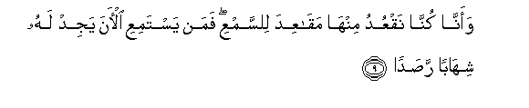
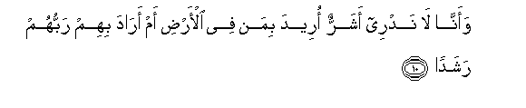
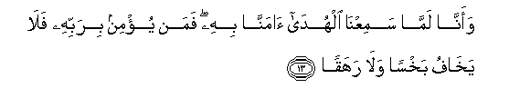
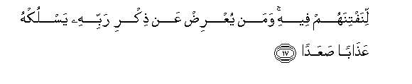

Sacred Texts Islam Index
Hypertext Qur'an Unicode Palmer Pickthall Yusuf Ali English Rodwell
Sūra LXXII.: Jinn, or the Spirits. Index
Previous Next

The Holy Quran, tr. by Yusuf Ali, [1934], at sacred-texts.com
Sūra LXXII.: Jinn, or the Spirits.
Section 1
1. Qul oohiya ilayya annahu istamaAAa nafarun mina aljinni faqaloo inna samiAAna qur-anan AAajaban
1. Say: It has been
Revealed to me that
A company of Jinns
Listened (to the Qur-ān).
They said, 'We have
Really heard a wonderful Recital!
2. Yahdee ila alrrushdi faamanna bihi walan nushrika birabbina ahadan
2. 'It gives guidance
To the Right,
And we have believed therein:
We shall not join (in worship)
Any (gods) with our Lord.
3. Waannahu taAAala jaddu rabbina ma ittakhatha sahibatan wala waladan
3. 'And exalted is the Majesty
Of our Lord: He has
Taken neither a wife
Nor a son.
4. Waannahu kana yaqoolu safeehuna AAala Allahi shatatan
4. 'There were some foolish ones
Among us, who used
To utter extravagant lies
Against God;
5. Waanna thananna an lan taqoola al-insu waaljinnu AAala Allahi kathiban
5. 'But we do think
That no man or spirit
Should say aught that is
Untrue against God.
6. Waannahu kana rijalun mina al-insi yaAAoothoona birijalin mina aljinni fazadoohum rahaqan
6. 'True, there were persons
Among mankind who took shelter
With persons among the Jinns,
But they increased them
In folly.
7. Waannahum thannoo kama thanantum an lan yabAAatha Allahu ahadan
7. 'And they (came to) think
As ye thought, that God
Would not raise up
Any one (to Judgment).
8. Waanna lamasna alssamaa fawajadnaha muli-at harasan shadeedan washuhuban
8. 'And we pried into
The secrets of heaven;
But we found it filled
With stern guards
And flaming fires.

9. Waanna kunna naqAAudu minha maqaAAida lilssamAAi faman yastamiAAi al-ana yajid lahu shihaban rasadan
9. 'We used, indeed, to sit there
In (hidden) stations, to (steal)
A hearing; but any
Who listens now
Will find a flaming fire
Watching him in ambush.

10. Waanna la nadree asharrun oreeda biman fee al-ardi am arada bihim rabbuhum rashadan
10. 'And we understand not
Whether ill is intended
To those on earth,
Or whether their Lord
(Really) intends to guide
Them to right conduct.
11. Waanna minna alssalihoona waminna doona thalika kunna tara-iqa qidadan
11. 'There are among us
Some that are righteous,
And some the contrary:
We follow divergent paths.
12. Wanna thananna an lan nuAAjiza Allaha fee al-ardi walan nuAAjizahu haraban
12. 'But we think that we
Can by no means frustrate
God throughout the earth,
Nor can we frustrate Him
By flight.

13. Waanna lamma samiAAna alhuda amanna bihi faman yu/min birabbihi fala yakhafu bakhsan wala rahaqan
13. 'And as for us,
Since we have listened
To the Guidance, we have
Accepted it: and any
Who believes in his Lord
Has no fear, either
Of a short (account)
Or of any injustice.
14. Waanna minna almuslimoona waminna alqasitoona faman aslama faola-ika taharraw rashadan
14. 'Amongst us are some
That submit their wills
(To God), and some
That swerve from justice.
Now those who submit
Their wills—they have
Sought out (the path)
Of right conduct:
15. Waama alqasitoona fakanoo lijahannama hataban
15. 'But those who swerve,—
They are (but) fuel
For Hell-fire'—
16. Waallawi istaqamoo AAala alttareeqati laasqaynahum maan ghadaqan
16. (And God's Message is):
"If they (the Pagans)
Had (only) remained
On the (right) Way,
We should certainly have
Bestowed on them Rain
In abundance.

17. Linaftinahum feehi waman yuAArid AAan thikri rabbihi yasluk-hu AAathaban saAAadan
17. "That We might try them
By that (means).
But if any turns away
From the remembrance
Of his Lord, He will
Cause him to undergo
A severe Penalty.
18. Waanna almasajida lillahi fala tadAAoo maAAa Allahi ahadan
18. "And the places of worship
Are for God (alone):
So invoke not any one
Along with God;
19. Waannahu lamma qama AAabdu Allahi yadAAoohu kadoo yakoonoona AAalayhi libadan
19. "Yet when the Devotee
Of God stands forth
To invoke Him, they just
Make round him a dense crowd."